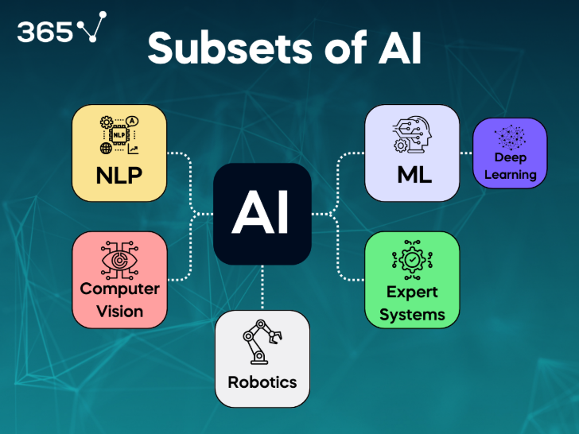

📚 Mục lục
🔍 Giới thiệu ngành nghề Kỹ sư AI
Kỹ sư Trí tuệ nhân tạo (AI Engineer) là người thiết kế, xây dựng và triển khai các hệ thống máy tính có khả năng “học hỏi” từ dữ liệu, đưa ra dự đoán hoặc quyết định mà không cần được lập trình rõ ràng từng bước. Họ là những người đứng sau các công nghệ như trợ lý ảo (Siri, Alexa), xe tự lái, hệ thống gợi ý của YouTube hay Netflix, và cả các chatbot như ChatGPT.
Trong xã hội hiện đại, AI đang len lỏi vào mọi lĩnh vực: từ y tế (chẩn đoán hình ảnh, phân tích gen), tài chính (phát hiện gian lận, dự báo thị trường), giáo dục (cá nhân hóa học tập), đến sản xuất (robot tự động hóa) và thương mại điện tử (gợi ý sản phẩm, chatbot chăm sóc khách hàng). Chính vì vậy, kỹ sư AI không chỉ là người làm việc với công nghệ, mà còn là người góp phần định hình tương lai của xã hội.
Ngành nghề Kỹ sư AI là sự kết hợp giữa khoa học máy tính, toán học, thống kê, kỹ thuật phần mềm và tư duy sáng tạo. Đây là một ngành nghề năng động, liên tục đổi mới, đòi hỏi người học phải luôn cập nhật kiến thức và công nghệ mới. Tuy nhiên, đổi lại là cơ hội nghề nghiệp rộng mở, mức thu nhập cao và khả năng tạo ra ảnh hưởng tích cực đến hàng triệu người.
📜 Lịch sử phát triển của ngành AI
- 1956 – Khởi nguồn: Tại Hội nghị Dartmouth (Mỹ), các nhà khoa học như John McCarthy, Marvin Minsky và Allen Newell đã chính thức đặt tên cho lĩnh vực “Artificial Intelligence”. Họ tin rằng trí tuệ của con người có thể được mô phỏng bằng máy móc.
- 1960s–1980s – Giai đoạn lý thuyết: AI phát triển mạnh về mặt học thuật, với các hệ chuyên gia (expert systems) và thuật toán tìm kiếm. Tuy nhiên, do hạn chế về phần cứng và dữ liệu, AI chưa thể ứng dụng rộng rãi.
- 1997 – Bước ngoặt lịch sử: Máy tính Deep Blue của IBM đánh bại kiện tướng cờ vua Garry Kasparov – một minh chứng cho tiềm năng của AI.
- 2012 – Cuộc cách mạng Deep Learning: Mạng nơ-ron tích chập (CNN) AlexNet chiến thắng cuộc thi ImageNet, mở ra kỷ nguyên học sâu (deep learning). Từ đây, AI bắt đầu bùng nổ nhờ sự kết hợp của dữ liệu lớn (big data), GPU mạnh mẽ và thuật toán tiên tiến.
- 2020s – AI trong đời sống: GCác mô hình như GPT-3, ChatGPT, DALL·E, AlphaFold… chứng minh AI có thể viết văn, vẽ tranh, dự đoán cấu trúc protein, và nhiều hơn nữa. AI trở thành công nghệ cốt lõi trong chuyển đổi số toàn cầu.
💼 Công việc chính – Một ngày làm việc của Kỹ sư AI
Công việc chính:
- Phân tích và xử lý dữ liệu: Làm sạch, chuẩn hóa và trực quan hóa dữ liệu để chuẩn bị cho quá trình huấn luyện mô hình.
- Xây dựng mô hình học máy: Lựa chọn thuật toán phù hợp, huấn luyện mô hình, đánh giá độ chính xác và hiệu suất.
- Triển khai mô hình vào hệ thống thực tế: Sử dụng các công cụ như Docker, Kubernetes, MLflow để tích hợp mô hình vào sản phẩm.
- Theo dõi và cải tiến mô hình: Giám sát hiệu suất, cập nhật dữ liệu mới, tinh chỉnh mô hình để duy trì độ chính xác.
- Làm việc nhóm: Phối hợp với các kỹ sư phần mềm, nhà khoa học dữ liệu, chuyên gia lĩnh vực để giải quyết bài toán thực tế.
Một ngày làm việc điển hình:
- 08:30 – 09:00: Họp nhóm, cập nhật tiến độ, phân công nhiệm vụ.
- 09:00 – 11:30: Làm việc với dữ liệu, viết code xử lý và phân tích.
- 11:30 – 13:00: Nghỉ trưa, đọc tài liệu chuyên ngành, cập nhật xu hướng mới.
- 13:00 – 15:30: Huấn luyện mô hình, thử nghiệm các thuật toán khác nhau.
- 15:30 – 17:00: Đánh giá kết quả, viết báo cáo, cập nhật hệ thống.
- 17:00 – 18:00: Tham gia hội thảo nội bộ, chia sẻ kiến thức với đồng nghiệp
🧠 Các nhánh chuyên biệt trong AI

Ngành Trí tuệ nhân tạo rất rộng lớn và được chia thành nhiều nhánh chuyên sâu. Mỗi nhánh tập trung vào một khía cạnh cụ thể của việc mô phỏng trí tuệ con người bằng máy móc:
- Học máy (Machine Learning – ML): Đây là nền tảng cốt lõi của AI. ML cho phép máy tính học từ dữ liệu mà không cần được lập trình rõ ràng. Ví dụ: dự đoán giá nhà, phân loại email spam, nhận diện chữ viết tay.
- Học sâu (Deep Learning – DL): Là một nhánh nâng cao của ML, sử dụng mạng nơ-ron nhiều lớp để xử lý dữ liệu phức tạp như hình ảnh, âm thanh, video. Deep Learning là công nghệ đứng sau các hệ thống như nhận diện khuôn mặt, xe tự lái, và ChatGPT.
- Xử lý ngôn ngữ tự nhiên (NLP): NLP giúp máy tính hiểu, phân tích và tạo ra ngôn ngữ con người. Ứng dụng bao gồm chatbot, dịch máy, phân tích cảm xúc, tóm tắt văn bản, và tìm kiếm thông minh.
- Thị giác máy tính (Computer Vision): Cho phép máy tính “nhìn thấy” và hiểu được hình ảnh, video. Ứng dụng trong nhận diện khuôn mặt, giám sát an ninh, phân tích ảnh y tế, và robot công nghiệp.
- Robotics: Kết hợp AI với cơ điện tử để tạo ra robot có khả năng cảm nhận, suy nghĩ và hành động trong môi trường thực tế. Ví dụ: robot hút bụi, robot giao hàng, robot phẫu thuật.
- AI đạo đức và xã hội: Nghiên cứu về tính minh bạch, công bằng, quyền riêng tư và trách nhiệm trong việc phát triển và sử dụng AI. Đây là lĩnh vực ngày càng quan trọng khi AI ảnh hưởng sâu rộng đến đời sống con người.
🎯 Phẩm chất và kỹ năng cần có
- Tư duy logic và phân tích: Giúp giải quyết các bài toán phức tạp và thiết kế thuật toán hiệu quả.
- Kiến thức toán học vững chắc: Đặc biệt là xác suất – thống kê, đại số tuyến tính, giải tích.
- Kĩ năng lập trình: Thành thạo Python là bắt buộc. Ngoài ra, biết thêm C++, Java hoặc R là lợi thế.
- Khả năng tự học: AI thay đổi nhanh chóng, cần liên tục cập nhật kiến thức mới.
- Kĩ năng làm việc nhóm: AI là lĩnh vực liên ngành, đòi hỏi sự phối hợp giữa nhiều chuyên gia.
- Tiếng Anh tốt: Để đọc tài liệu, tham gia khóa học quốc tế, và cập nhật nghiên cứu mới.
🧭 Hãy xem đây là bản đồ định hướng – giúp bạn hiểu rõ ngành Kỹ sư AI và tự tin bước vào hành trình khám phá công nghệ tương lai!